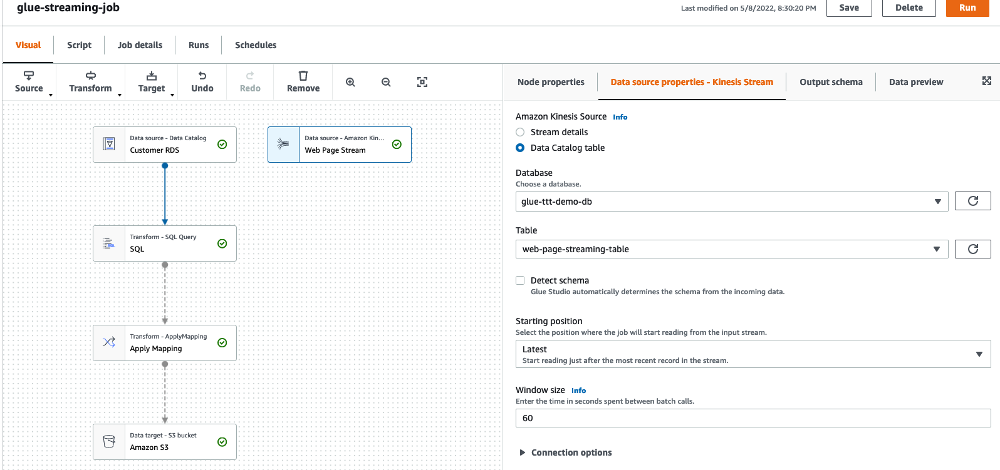

GLUE (STUDIO) STREAMING
The Part 3 - Glue (Studio) Streaming - of the ETL Train the Trainer workshop is where you are going to use AWS Glue Studio Graphical Interface for the first time.
You are going to use Glue Studio do build 2 jobs here. The first job is a dummy Glue Streaming Job that will validate the JOIN between the customer RDS table and a web_page CSV data that you uploaded earlier to S3.
Note: This CSV data is basically a representation of the actual web-page-streaming-table (with the different of that one being in JSON format) that you will use in real Glue Streaming Job
Apart from validate the JOIN between datasets, this dummy job will also validate the SQL code used in the SQL Transform node of this lab. If validation succeeds, you will then be able to Preview the Data before outputting it or, in this case, before building the real Glue Streaming Job.
1. Understanding the Streaming Resources Provided (CloudFormation & Scripts)¶
For this lab to work, the CloudFormation template provided few resources for you already.
Kinesis Data Stream
A Kinesis Data Stream named etl-ttt-demo-stream has been added already which will receive the stream of data from a script you will run later on this lab. Click here to search for Amazon Kinesis and explore the Kinesis Data Stream if you want.

Cataloged Streaming Table
As you already saw it, a table named web-page-streaming-table has been created for you with a proper schema definition and all the necessary settings. You can see the details of this table in the AWS Glue Console .
Here's a snapshot of that table's schema.

Kinesis Data Ingestion Script (python)
As mentioned, you will be running the following script in order to simulate streaming data being added to your Kinesis Data Stream etl-ttt-demo-stream

To download the script (and to take a loot at it), run the following commands:
cd ~/environment/ttt-demo/
aws s3 cp s3://ee-assets-prod-us-east-1/modules/31e125cc66e9400c9244049b3b243c38/v1/downloads/etl-ttt-workshop/PutRecord_Kinesis.py .
cat PutRecord_Kinesis.py
RDS MySQL Customer Table
For the Part 3 only of this workshop, you need to delete multiple rows from the RDS MySQL's customer table. That's because the customer is too big originally so previewing such amount of data with Glue Studio Data Preview feature is inneficient and may fail.
Run the following SQL Delete Statement to reduce the table to only 1000 rows:
mysql -h ${mysqlendpoint} -u etluser -petltttdemopwd -Dtpcds -e "delete from customer where c_customer_sk > 1000";
mysql -h ${mysqlendpoint} -u etluser -petltttdemopwd -Dtpcds -e "commit";
2. Validating Streaming Job Logic and Data (Glue Studio Dummy Job)¶
Let's start building the dummy job to validate our Glue Streaming Job logic.
From the AWS Glue Console, click on AWS Glue Studio under the ETL section in the far left menu.

This will take you to the AWS Glue Studio Console where you will be authoring the jobs graphically. For that, click on Jobs on the far left menu, select Visual with a blank canvas option and click on Create.

You will be presented with a blank canvas. The first thing you must do there is to rename you job. Just click where it says "Untitled job"
, type dummy-streaming-job and click out the Job's name box.

Now, the next thing you must do, is to set your jobs detail. Click on the tab Job details tab and set the following configurations:
- Under IAM role select AWSGlueServiceRole-etl-ttt-demo
- Check the Automatically scale the number of workers option (GA regions only, otherwise set number of workers to 4)
- Under Job bookmark select Disable
- Set Number of retries to 0
Note: In production environments, you want to enable the bookmark and set retries to bigger than 0.
You don't need to change any other settings here, but you should take some time to explore what settings are available in this tab. When you are done exploring, click Save on the upper right to save the changed settings.
Click the Visual tab again to go back to visual editor. You should see 3 dropdown buttons: Source, Transform, and Target. Let's start creating the following 2 sources:
Web Page Source
For the Web Page CSV source, click on the Source dropdown icon and choose Amazon S3 in dropdown list. Click on the node that has been automatically added to the canvas to highlight it. Make the following changes to it:
- Click Node properties tab
- Set Name to
Web Page S3 - Click Data source properties - S3 tab
- Under S3 source type select S3 location
- To set the S3 URL, use the Browse S3 button to navigate to: s3://${BUCKET_NAME}/etl-ttt-demo/csv_tables/web_page.csv
- Uncheck the Recursive option
- Click Infer schema button at the bottom
- Click on Output schema tab to see schema infered, then click Save
Customer RDS Source
For the Customer RDS source, click on the Source dropdown icon and choose AWS Glue Data Catalog in the dropdown list.
- Click Node properties tab
- Change Name to
Customer RDS - Click Data source properties - Data Catalog tab
- Under Database select glue_ttt_demo_db
- Under Table select rds_crawled_tpcds_customer
- Click on Output schema tab to see schema, then click Save

To join both datasets, click on the Web Page S3 node first to highlight it, then click on Transform dropdown icon.
Note: You will notice there are pre-build transformations and custom transformations. Glue Studio is designed to be used by developers who could write custom Apache Spark, Glue and SQL code, but it also provides pre-build common transformations. For this lab you wil lbe using a custom SQL Transform to write your own SQL Join code.
In the list of transforms that appears, scroll to the bottom and choose SQL. A new SQL node will be linked to the Web Page S3 node. Click on this new SQL node to highligt it and do the following:
- Click Node properties tab
- Under Node parents, select Customer RDS by clicking the checkbox next to it
- Click Transform tab
- Set Input sources Web Page S3 with Spark SQL aliases value to
wp - Set Input sources Customer RDS with Spark SQL aliases value to
cust - Copy the following code to SQL query and click Save
- Set Input sources Web Page S3 with Spark SQL aliases value to
select CONCAT(cust.c_first_name, ' ', cust.c_last_name) as full_name,
cust.c_email_address,
count(wp.wp_char_count) as total_clicks
from cust
left join wp
on cust.c_customer_sk = wp.wp_customer_sk where 1=2 --remove the where clause after preview!!
group by 1,2
order by total_clicks desc
- Click on Data Preview tab
- Click on the Start data preview session button there.
- In the pop-up window that will open, choose the IAM role AWSGlueServiceRole-etl-ttt-demo
- Wait for Data Preview to finish (it takes about 5 minutes to preview)
Note: It will return zero rows because you are previewing the query with where 1=2 first. This is to make previewing faster and to avoid issues. If issues happen (or previewing is taking more than 5 minutes), Save this job, go back to Jobs in the Glue Studio left menu and, under Your jobs select the dummy job you created and clone it into a new one. Rename it dummy-streaming-job-2. TIP: You can delete the first job dummy-streaming-job later too.
- Once preview is completed, Click on Output schema tab to see the schemas(s)
Note that you have 2 outputs: Output 1 and Output 2.
- Click on the Use datapreview schema button that you see right there in the Output schema tab.
Note that the schema now matches only the relevant columns of the query.
- Click on Transform tab again and remove the where 1=2 clause.
- Click on the Data Preview tab one last time to see the data appearing there.
Note that that only relevant columns were brought from the SQL query. Click Save.
Now, add an Apply Mapping transform by clickinng on the SQL node first to highlight it, then click on Transform dropdown icon and choose Apply Mapping from the list.
A new Apply Mapping node will be linked to the SQL node. Click on this new Apply Mapping node to highligt it and do the following:
- Click on Transform tab
- Change Source key full_name to c_full_name
- Click on Output schema tab to see the change and Save.

Finally, add a Target to the job. To do this, first click on the Apply Mapping node to highlight it, then click on Target dropdown, choose Amazon S3 from the list and a new Amazon S3 node will be linked to the Apply Mapping node.
Click on this new Amazon S3 node to highligt it and do the following:
- Click on Data target properties - S3 tab
- Set Format to CSV
- Set S3 Target Location to s3://$BUCKET_NAME/etl-ttt-demo/output/gluestreaming/total_clicks/
TIP: Switch back quickly to your Cloud9 enviroment and use the following command to build the entire path you need for the S3 Target Location above.
echo "s3://$BUCKET_NAME/etl-ttt-demo/output/gluestreaming/total_clicks/"
- Click Save.

!!! You can now save this job for the last time but DO NOT RUN IT!!!!
3. Creating the Glue Streaming Job (Cloning Jobs!)¶
Go back to Jobs in the Glue Studio left menu and, under Your jobs select the dummy-streaming-job (or any clone of it). Click on the Actions dropdown button and choose Clone Job.

The visual canvas will open and you will notice that the cloned job contains the exact same nodes with the exact same definitions you choose for the dummy job. Rename this new job to glue-streaming-job and Save it.
Now, all you have to do is:
1. Remove the Web Page S3 by clicking on it to highlight it first, then clicking on Remove (trash icon)
2. click on the Source dropdown icon and choose Amazon Kinesis in dropdown list. A new and isolated Amazon Kinesis node will appear.
3. Click on the new Amazon Kinesis node to highlight it, go to Node Properties tab and name it Web Page Stream .
4. Click on Data source properties - Kinesis Stream tab and under Amazon Kinesis Source choose Data Catalog table. Then, under Database choose glue_ttt_demo_db and under Table choose web-page-streaming-table.
5. Uncheck Detect Schema, set Starting position to Latest and set Window size to 60. Click Save

6. Now, click on the SQL joint node at the center of the canvans to highlight it. Go to Node Properties tab and under Node parents check the Web Page Stream node to complete the Join.
7. Click on the Transform tab and fix the SQL aliases for the Amazon Kinesis Input Source by typing wp there to match the alias in the SQL query. Click Save.

!!! !!! DO NOT RUN THIS JOB YET !!! !!!
Before running this job, go back to your Cloud9 Enviroment tab and run the following commands to repopulate the RDS MySQL's customer table:
cd /tmp/dsd/
file=customer_1_2.dat
mysql -h ${mysqlendpoint} -u etluser -petltttdemopwd --local-infile -Dtpcds -e "truncate table tpcds.customer"
mysql -h ${mysqlendpoint} -u etluser -petltttdemopwd --local-infile -Dtpcds -e \
"load data local infile '$file' replace into table tpcds.customer character set latin1 fields terminated by '|'"
mysql -h ${mysqlendpoint} -u etluser -petltttdemopwd --local-infile -Dtpcds -e "select count(*) from tpcds.customer"
You should have 100.000 rows in the customer table now.
Now, you are free to run the Glue Streaming Job. Go back to the Glue Studio tab and click Run. A green banner will appear at the top with a message "Successfully started job glue-streaming-job. Navigate to Run Details for more details.". Click on Run Details to confirm that the job is indeed Running.

TIP: You can delete all the dummy jobs now (Once you validate the data previewed previously).
You have finshed creating & running a Glue Streaming Job. At this point, there's no data being pushed into the Kinesis Data Stream source of this job. Once you are ready move to the Part 4 - Orchestration & Data Analytsis where you will start to push data into the Kinesis Stream.